01
가치줍깅
GPS 기반 러닝·플로깅 기록과 AI 쓰레기 분류, 최대 6인 그룹 음성통화로 지역 기반 플로깅 커뮤니티를 연결하는 서비스입니다. 서비스 기획과 실시간 음성 통신 구조 설계를 담당했습니다.
- Spring Boot
- WebRTC/LiveKit
- JWT
- GPS
ABOUT ME
안녕하세요! 데이터를 이해하는 것에서 나아가, 실제로 사용할 수 있는 서비스로 구현하는 것에 관심이 많은 백엔드 개발자 김윤영입니다.
| 전공 | 서울시립대학교 생명과학과 |
|---|---|
| 현재 | 삼성청년SW·AI아카데미(SSAFY) 15기 비전공 Java 과정에서 Java, Spring Boot, 데이터베이스, 웹 개발을 학습 중입니다. |
| 진행 프로젝트 | 플로깅 커뮤니티(가치줍깅), 여행 기록 서비스(PicK), 금융 교육 서비스(Seed-it), 폐렴 진단 보조 서비스(ICXReam) |
| 핵심 역량 |
|
SKILLS
주로 다루는 언어와 도구들입니다.
현재는 WebRTC, Redis, Kafka 등 실시간 통신과 메시지 큐 영역까지 학습을 확장하고 있습니다.
PROJECTS
SSAFY 과정에서 직접 기획하고 개발한 프로젝트들입니다.
GPS 기반 러닝·플로깅 기록과 AI 쓰레기 분류, 최대 6인 그룹 음성통화로 지역 기반 플로깅 커뮤니티를 연결하는 서비스입니다. 서비스 기획과 실시간 음성 통신 구조 설계를 담당했습니다.
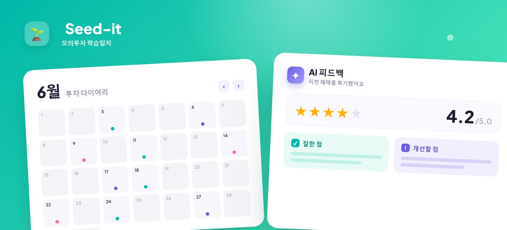
청소년이 투자 이유와 결과를 기록하며 스스로 투자 과정을 학습하는 모의투자 학습일지 플랫폼입니다. 팀장으로서 문제 정의부터 기능 설계, 일정 관리까지 주도했습니다.
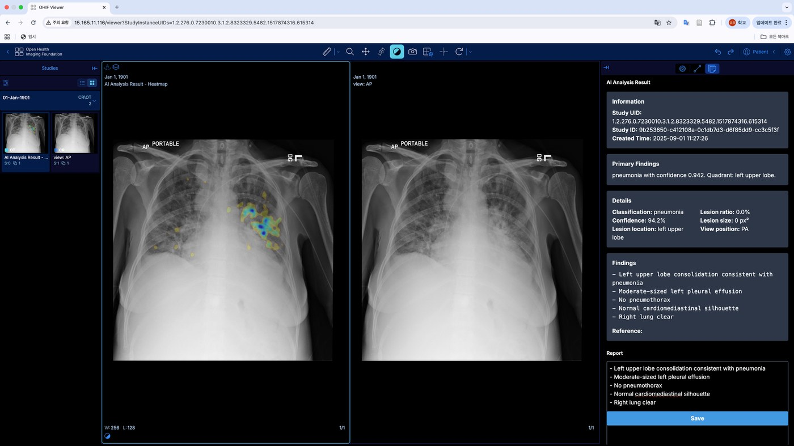
지역보건소와 원격판독센터를 연결해 폐렴 진단 워크플로우를 강화하는 의료 AI PoC입니다. ResNet50 기반 병변 분류와 Heatmap 시각화, RAG 기반 소견서 생성을 NLP Data Scientist로 담당했습니다.
EXPERIENCE
Java, Spring Boot, MySQL, MyBatis, Vue 3 등 웹 백엔드 개발을 학습하며, 금융 교육 서비스, 플로깅 커뮤니티 서비스, 여행 기록 서비스를 팀 프로젝트로 구현하고 있습니다.
Python, PyTorch 기반 딥러닝 모델 개발을 학습하고, 흉부 X-ray 이미지 분류 프로젝트를 통해 AWS 환경에서의 모델 배포를 경험했습니다.
문서 작성, 일정 관리, 보고 및 관계자 조율 업무를 수행하며 요구사항 정리와 커뮤니케이션 역량을 쌓았습니다.
생명과학을 전공하며 생명 현상과 의료 데이터에 대한 도메인 이해를 갖췄고, 이를 의료 AI 프로젝트로 연결했습니다.
920점
IH
데이터분석 준전문가
1급
Expert
CONTACT
함께 문제를 고민하고, 사용자에게 실질적인 도움이 되는 서비스를 만들고 싶습니다.
청소년 주식 투자가 5년 새 684% 급증했지만, 체계적인 금융 교육 없이 시장에 진입하는 경우가 빠르게 늘고 있습니다.
기존 모의투자 앱은 매매 결과만 남기고 그 사이의 '생각'은 흘려보냅니다. Seed-it은 매수는 가설, 매도는 복기로 투자를 결과가 아닌 사이클로 다시 설계했습니다.
100개 종목 조회 · 매수 가설 작성 · 매도 복기 · 포트폴리오 · 거래 캘린더
하루 한 편 투자일지 작성 · 거래 및 일지 기반 Gemini 맞춤 피드백
카테고리별 유튜브 학습 콘텐츠 · 즐겨찾기 · 댓글로 함께 공부하기
활동 내역과 연동된 성장 시각화 · 꾸준히 쓸수록 자라는 새싹 키우기
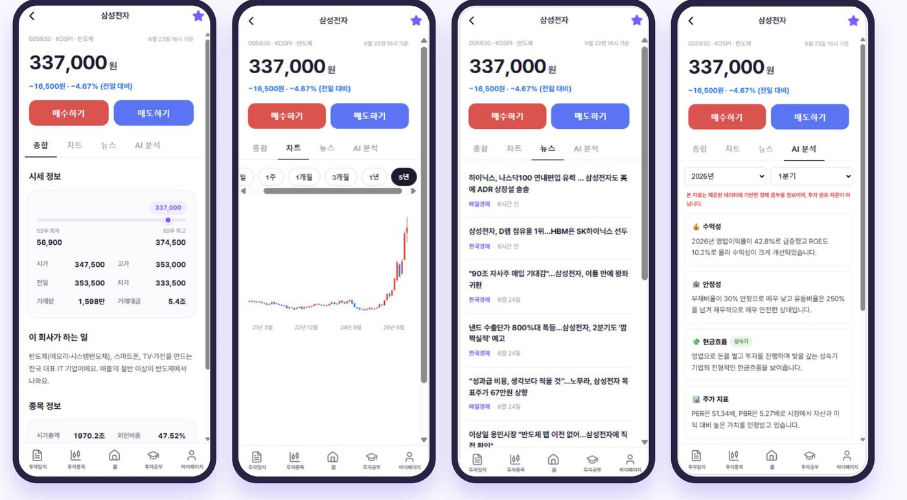
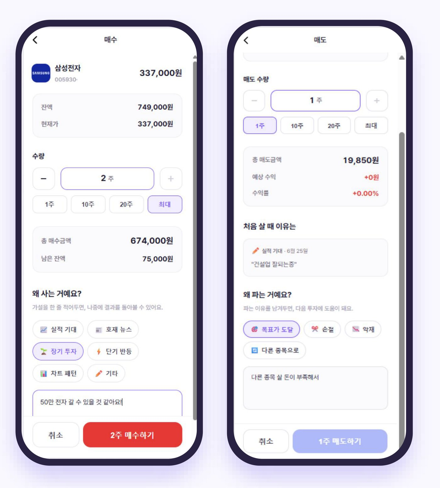
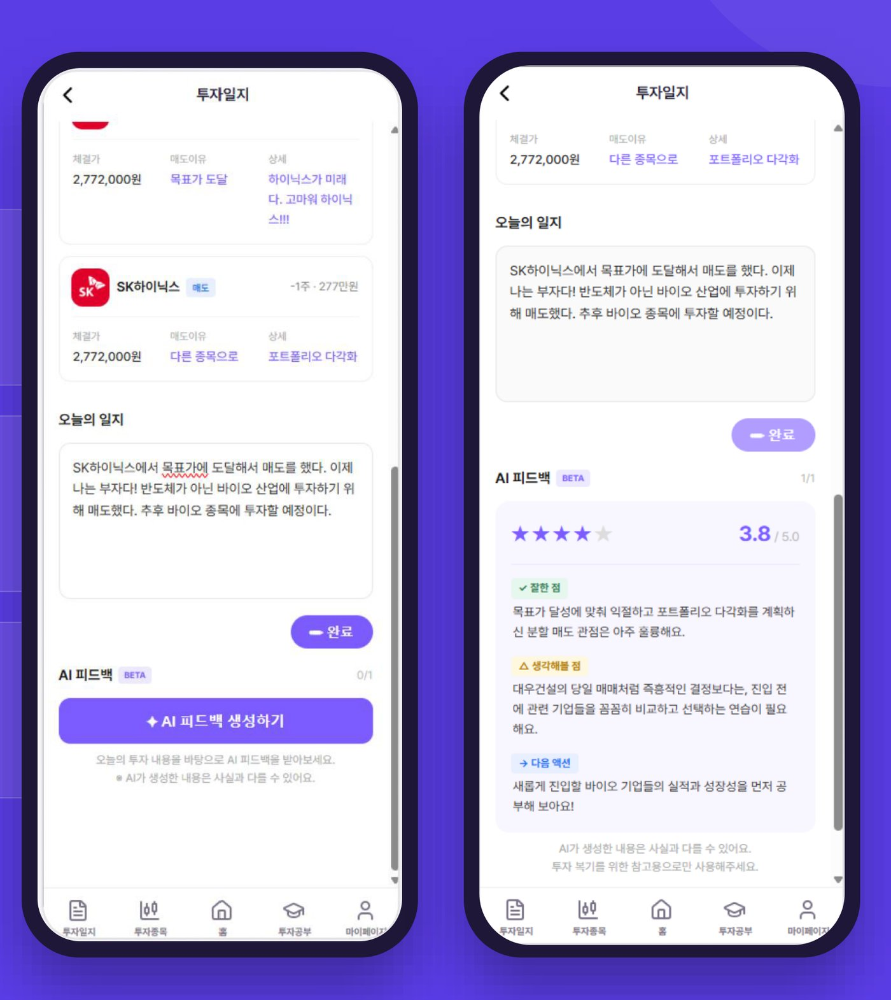
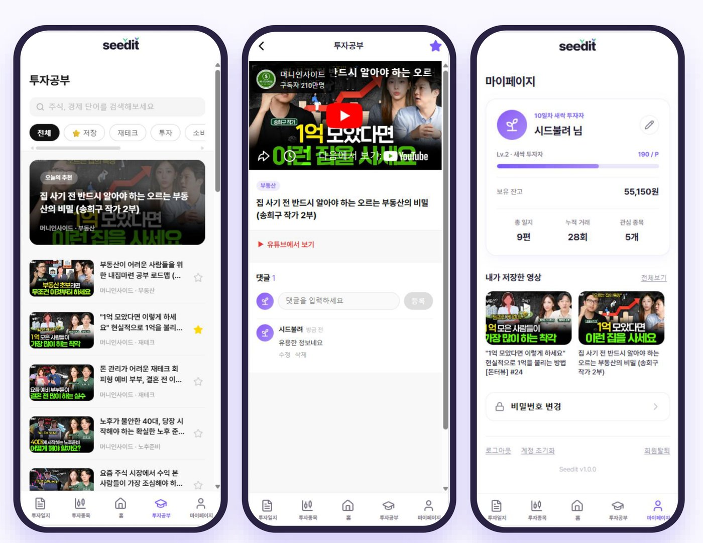
100개 우량주 시세 수집 · 일별 OHLCV · 펀더멘털
Cron 매일 10시 / 16시
기업 재무제표 수집 · 사업/반기/분기보고서
AI 리포트 생성 시 호출
gemini-3.5-flash
투자일기 AI 피드백 · AI 기업분석 리포트
한국경제 · 매일경제 · 서울경제
종목 관련 뉴스 자동 수집
Vue 3 · Pinia · Vue Router · Axios
Spring Boot 4 · Java 25 · MyBatis · Spring Security · JWT
MySQL 8.0 · 14개 테이블 · BIGINT PK · EBS 영구 저장
AWS EC2(t3.small) · Nginx · GitHub Actions · SCP+SSH 배포
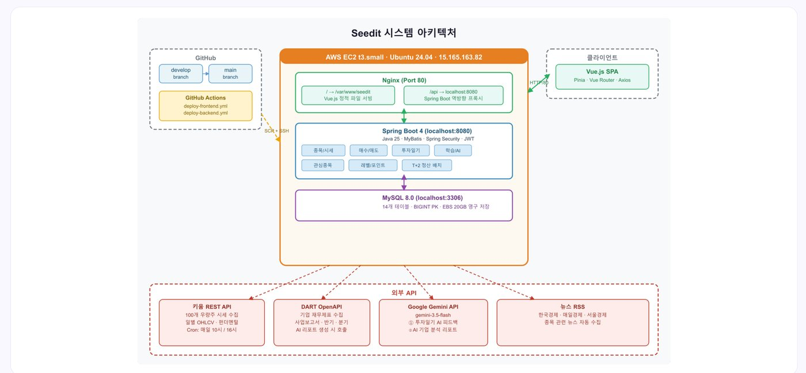
매도 대금이 즉시 잔고에 반영되는 문제 — 정산 개념 없이 매도와 입금을 같은 트랜잭션에서 처리해, 실거래 T+2 결제 규칙이 반영되지 않고 잔고가 과대 계상되었습니다.
매도 즉시 현금이 잡혀 잔고가 부풀려지고, 실제 거래와 흐름이 달랐습니다.
정산 개념 없이 매도와 입금을 같은 트랜잭션에서 처리했기 때문입니다.
매도 시 정산 대기 레코드 생성 → T+2 배치가 정산일에 잔고 반영. 매매와 정산을 분리했습니다.
배포된 서비스에서 가설 기반 매매와 AI 피드백을 직접 확인해보세요.
차량으로 30분 이내에 보건소·공공의료기관에 접근 가능한 비율은 80~95%에 달하지만, 고령 인구가 많은 지역일수록 영상의학과 전문의는 절대적으로 부족합니다.
보건소·공공의료시설 자체는 지역 간 분포 차이가 크지 않지만, 전문 의료인력 불균형이 의료 접근성을 가르는 핵심 요인이었습니다. 국내법상 원격 진료는 불법이지만 의료인 간 원격 판독은 합법이라는 점에 착안해, 수도권 전문 의료인력이 원격으로 지방 환자를 지원하고 AI 판독 보조 시스템이 워크플로우 효율을 높이는 방향으로 문제를 재정의했습니다.
1차 병원·보건소에서 환자를 촬영
AI가 폐렴 의심 부위를 탐지
탐지 결과 기반 소견 문구 자동 생성
AI 결과 기반 소견서 자동완성
원격판독센터 판독 전문의가 확정
환자·보호자에게 결과 전달
OHIF(오픈소스 DICOM Viewer)와 Orthanc PACS 서버로 실제 임상 환경과 동일한 영상 관리 환경을 구현하고, AI 분석 결과와 히트맵, 소견서 초안을 한 화면에서 확인할 수 있도록 했습니다.
소아 흉부 영상이 아니면서 폐렴 관련 레이블이 포함된 3개 소스를 검토해 cxr-pneumonia-5 데이터셋을 직접 구축했고, RAG용 리포트 텍스트 2,195건을 함께 수집했습니다.
Normal / Pneumonia / Abnormal 3-class 레이블, 결측치 없어 전량 사용
폐렴 포함 14종 레이블 중 Pneumonia 관련 소견만 필터링, 판독 리포트와 쌍으로 존재
RSNA와 원천 데이터가 동일함을 확인 → Data Leakage 방지를 위해 사용 제외
레이블링 과정에서 부정어·불확실성 문맥 오인식, ViewPosition 오기재, 중복 촬영 등 실제 의료 데이터 특유의 노이즈를 직접 점검하고 일부는 클렌징 규칙을 만들어 해결했습니다.
딥러닝 깊이가 깊어질수록 발생하는 기울기 소실 문제를 skip-connection으로 완화하는 ResNet50을 baseline으로 선정해 Normal/Pneumonia/Abnormal 3-class를 분류했습니다.
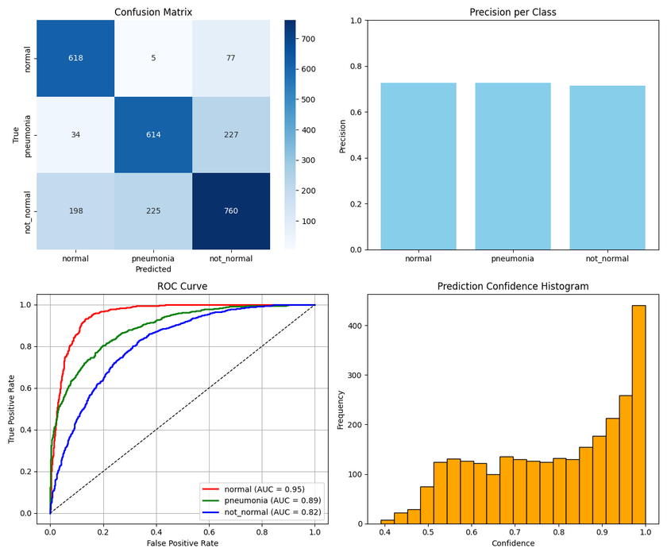
모델이 폐야(lung fields)에 집중하도록 전처리한 뒤, Vanilla Gradient 기반 히트맵과 사분면(quadrant)·병변 비율(lesion ratio) 등 정량 지표를 함께 제공해 판독 신뢰성을 강화했습니다.
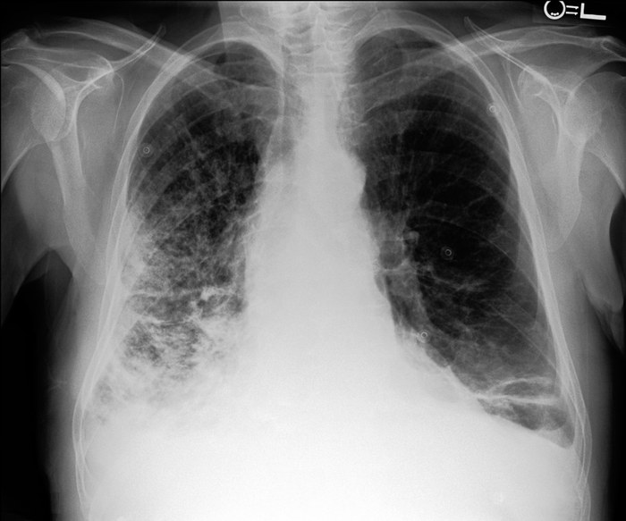
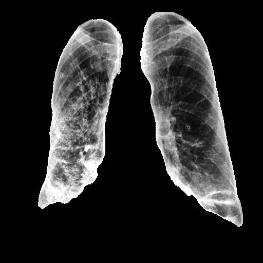
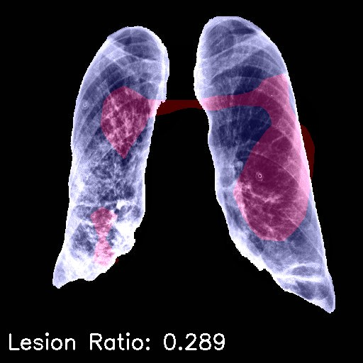
AI 예측 결과(label·confidence·quadrant·lesion_ratio)를 메타데이터로 저장하고, 판독 리포트는 Vector DB에 임베딩해 Claude Sonnet 3.7 + RAG로 소견서 초안을 생성했습니다. 3.7은 3.5 대비 출력 토큰 한도가 대폭 상향(GA 64K)되고 확장 사고(extended thinking) 모드를 지원해, 컨텍스트 요약과 소견 생성의 품질·길이 안정성이 유리하다고 판단해 선정했습니다.
분류 모델은 Overfitting 양상과 일반화 성능 부족이라는 한계가 뚜렷했습니다. 근본적인 해결책은 아니지만 보조적 접근으로 Confidence Threshold 기반 Soft Triage를 도입했습니다.
Overfitting 양상, 일반화 성능 부족으로 실제 임상 신뢰도 확보에 한계
Confidence Threshold(0.6~0.7)에 따라 판정을 나누는 Soft Triage 도입
Threshold 0.65 기준 정확도 83.91% 달성. 다만 여전히 의사의 적극적 개입이 필요한 중간 단계 전략
생성 모델의 신뢰도를 높이기 위해 이미지·리포트를 함께 학습하는 GLoRIA(Global-Local Representation Learning) 멀티모달 프레임워크도 실험했습니다.
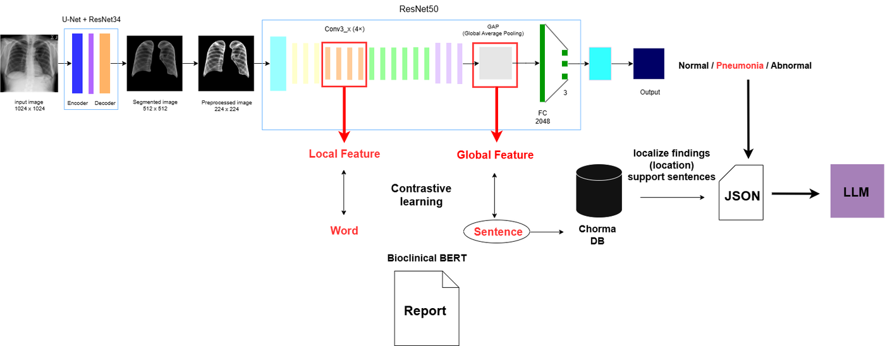
실험 결과 SBERT cosine similarity 평균이 GLoRIA 0.608, 기존 RAG 0.647로 RAG 방식이 더 일관되고 임상적으로 적절한 결과를 보여, RAG 기반 접근을 최종 채택했습니다.
상용 제품인 루닛(Lunit)과 비교했을 때, 저희 PoC(ICXReam)는 폐렴 단일 병변에 집중하고 DICOM이 아닌 JPEG/REST API로 결과를 제공한다는 차이가 있었습니다.
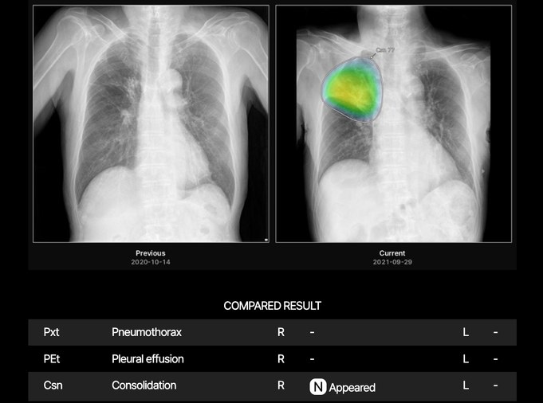
Python · JavaScript
AWS EC2 · SageMaker AI · Bedrock · OpenSearch
OHIF Web Viewer · Orthanc DICOM Server
PyTorch · FastAPI · React · Docker · GitHub Actions
이금희(팀장·구현) · 김윤영(NLP Data Scientist) · 이주미(CV Data Scientist) 3인 팀으로 진행했습니다. NLP Data Scientist로서 다음을 담당했습니다.
AI 모델을 만드는 것과 사용자가 실제로 이용할 수 있는 서비스를 만드는 것은 서로 다른 문제라는 점을 체감했습니다. 이 경험이 서버·API·데이터베이스 중심의 백엔드 개발을 본격적으로 학습하게 된 계기가 되었습니다.